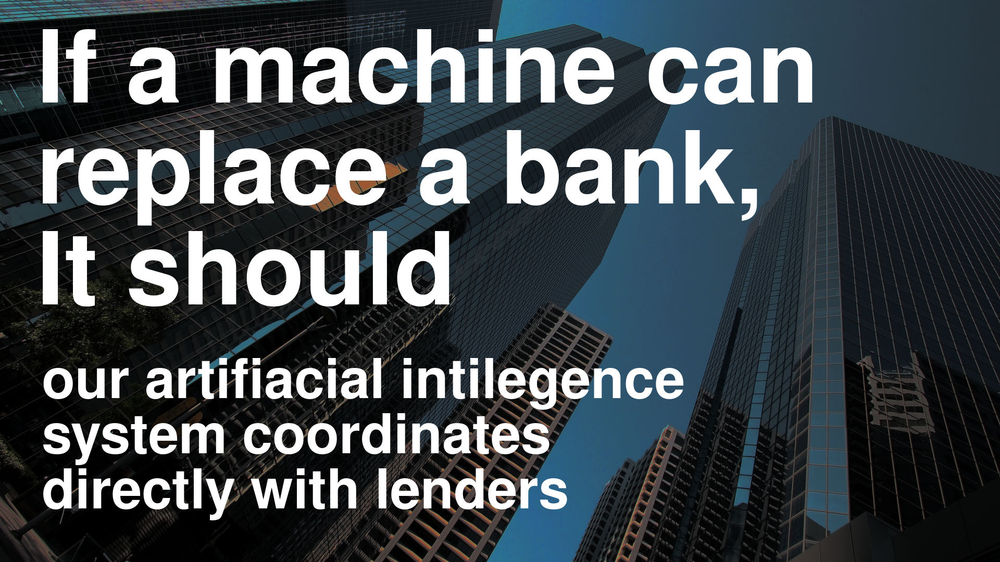

Marketing Campaign for the website:
Only 1.5 % of Indian population invests in the stock market, they are clearly suspicious of alternate investments. So for a product like finance-peer trust and consequently maintaining an accessible image is very important.
The current website shows a viable financial instrument, and it does that job well, but it will appeal primarily to investors.
Majority of the public sticks to savings accounts and F.D.s out of the distrust for, and inexperience with, financial-institutions. But loans are a house-hold need and a much wider targeted marketing campaighn is possible:
Instead of presenting ourselves like a financial tool. we present a community of borrowers and lenders that will not let banks give them a bad deal and will replace them with advanced AI as the middle-man.

We want people who come across our service to let others know about it. Presenting ourself as a cause and idea makes us more appropriate for conversation.